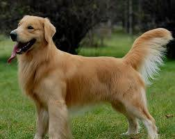

黃金獵犬
黃金獵犬起源於19世紀的英國蘇格蘭，對黃金獵犬其記載如血統來源或被協會承認記載資料不一。
不過，在1800年代時被培養成回收獵物的犬種。有人認為牠是粗毛水性長耳獵犬和身材較瘦的紐芬蘭犬交配而成。
而亦有傳說黃金獵犬來自一個俄羅斯馬戲團犬的品種演進而來，但是牠還是比較像由黃色的平毛獵犬和特威得西班牙水獵犬與後來引進的愛爾蘭蹲獵犬、拉不拉多犬和尋血獵犬交配孕育而成。
在西元1920年以後以今天大家所熟悉的黃金獵犬作為正式的名字，在此之前是以金色平毛犬的名字而聞名。
原本是獵犬，具有靈敏的嗅覺，有助於發現和追蹤獵物，也可以用來當成搜尋麻藥用的犬隻。此外，亦可用來擔任導盲犬。

連到首頁
連到第3頁
連到第4頁